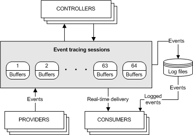
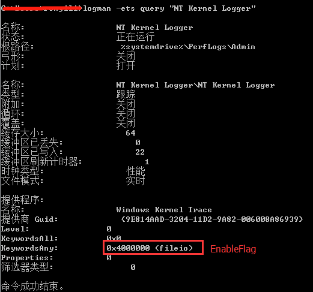
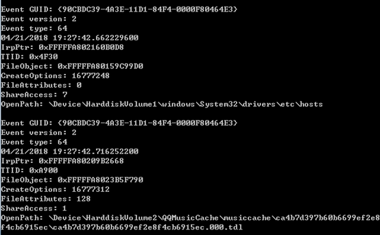

ETW机制
通过ETW获取的信息非常丰富，可以通过ETW获取到的信息有：
- 文件类信息，包括文件创建、删除、读写等信息。
- 注册表信息，包括注册表的创建、删除、读写等信息。
- 进程线程信息，包括进程创建退出、线程创建退出、模块加载等。
- 网络信息，TCP、UDP协议的发送，接收ip地址以及数据长度等。
- CPU的使用情况、内存使用情况以及发生事件时的堆栈信息等。
更多的信息获取参见msdn中EnableFlags选项介绍。
由于ETW获取的信息非常丰富，且对系统性能影响不是很大，因此用来作为一种系统监控手段非常合适。
ETW框架模型概述
Event Trace for Windows(ETW) 是一个高效的内核级别的事件追踪机制，它可以记录系统内核或是应用程序的事件到日志文件。我们可以通过实时获取或是从一个日志文件来解析处理这些事件，之后通过这些事件用来调试程序或是找到程序的性能问题。
ETW主要由三部分组成，分别是：
- Controllers（事件控制器），用来开关event trace 会话 和 Providers。
- Providers（事件提供器）， 用来提供事件。
- Consumers（事件消耗器），用来处理事件。
另有一个关键的概念Sessions。
这四者的关系图如下图所示：

Controllers
通过Controllers可以进行各种设置。如设置日志是输出到文件还是实时解析，设置Session的打开和关闭，设置Session中数据缓冲池的大小以及其他统计信息等。
Providers
Providers是提供事件的程序，当一个Provider注册后，可以通过Controller控制它是否输出事件。
常见的provider共有四种，分别是MOF Providers, WPP Providers, manifest-based Providers, 和 TraceLogging Providers。在vista之后应当使用manifest-based和TraceLogging Provider。
Consumers
Consumers是一种可以选取一个或多个Session作为事件源的事件处理程序，它可以同时接收多个Session的事件。Consumers可以接收处理存储在日志文件中的事件，或是实时处理从Session获取的事件。
事件在某些情况下会丢失，这一般是设置不当导致的，可能的原因有以下几个：
- 事件内容的总大小超过64kb。
- 设置的事件缓冲区的大小小于事件的总大小。
- 实时的事件处理器处理事件不够快或是记录到文件时，文件已经填满。
- 当记录到文件时，磁盘速度太慢不足以快速的写入事件。
需要注意的是，这三个组件可以在一个应用程序中，也可以根据情况分布在不同的应用程序中。
Sessions
除了上述三个组件外，还有一个概念也较为重要，这便是Session。Session由Controllers定义，Session记录了一个或多个Providers输出的事件，其主要用来管理和刷新事件的缓存。
系统同时最多支持64个Session，这些Session中有两个Session比较特殊，由操作系统直接定义，可直接使用，分别是：
Global Logger Session, 它用来记录操作系统早期启动过程中的事件，例如设备驱动相关的事件。NT Kernel Logger Session，它用来记录操作系统生成的预定义系统事件，例如磁盘IO或页面错误事件。
基本实现
ETW本质上是一个日志记录追踪系统，一般的用法是让自己的程序作为Provider，并使用ETW机制输出日志，之后建立相应的Consumer来解析日志，根据日志分析应用程序的执行过程。
由于操作系统默认提供了NT Kerner Logger Session，且该Session提供了众多操作系统中的重要事件信息，因此可以直接使用该Session获取系统事件。由于该Session中已经包含了输出事件的Providers，因此在使用中只需要建立相应的Controller和Consumer即可。Controller用来控制Session的开关 ，Consumer用来处理从Session中拿到的事件。
整个实现以监控文件创建事件为例进行说明，程序中主要分为两个部分，一部分是Controller，用来控制Session的打开关闭；另一部分是Consumer，用来从Session中获取解析事件。
部分代码实现如下：
#include <stdio.h>
#include <stdint.h>
#include <Windows.h>
#include <evntrace.h>
#include <evntcons.h>
/// 事件回调函数，微软提供的一种方式，详细参见附件代码
void WINAPI ProcessEvent(PEVENT_RECORD pEvent);
/// 事件实时处理线程
DWORD WINAPI consumer_thread(LPVOID param)
{
EVENT_TRACE_LOGFILE trace;
memset(&trace, 0, sizeof(trace));
trace.LoggerName = const_cast<wchar_t*>(KERNEL_LOGGER_NAME);
trace.LogFileName = NULL;
/// 指定处理事件的模式，这里是实时处理
trace.ProcessTraceMode = PROCESS_TRACE_MODE_REAL_TIME | PROCESS_TRACE_MODE_EVENT_RECORD;
trace.Context = NULL;
/// 指定事件处理函数，该函数实现较为复杂
trace.EventRecordCallback = ProcessEvent;
/// 打开session
TRACEHANDLE handle = OpenTrace(&trace);
if(handle == (TRACEHANDLE)INVALID_HANDLE_VALUE)
{
printf("handle is invalid value.\n");
return -1;
}
/// 开始处理事件，该函数为阻塞函数，在这里不断调用事件处理函数处理事件，直到session关闭
ProcessTrace(&handle, 1, 0, 0);
CloseTrace(handle);
return 0;
}
int main()
{
uint32_t buff_size = sizeof(EVENT_TRACE_PROPERTIES) + sizeof(KERNEL_LOGGER_NAME);
EVENT_TRACE_PROPERTIES *trace_config = reinterpret_cast<EVENT_TRACE_PROPERTIES*>(new char[buff_size]);
memset(trace_config, 0, buff_size);
trace_config->Wnode.BufferSize = buff_size;
trace_config->Wnode.Flags = WNODE_FLAG_TRACED_GUID;
trace_config->Wnode.ClientContext = 1;
trace_config->Wnode.Guid = SystemTraceControlGuid; //< NT Kernle Logger session的GUID
trace_config->EnableFlags = EVENT_TRACE_FLAG_FILE_IO_INIT; //< 关注磁盘文件IO事件
trace_config->LogFileMode = EVENT_TRACE_REAL_TIME_MODE; //< 事件追踪的模式，这里是实时处理事件
trace_config->LoggerNameOffset = sizeof(EVENT_TRACE_PROPERTIES);
EVENT_TRACE_PROPERTIES *temp_config = reinterpret_cast<EVENT_TRACE_PROPERTIES*>(new char[buff_size]);
memcpy(temp_config, trace_config, buff_size);
TRACEHANDLE session_handle = NULL;
uint32_t status = 0;
/// 指定开启session的名称，这里是 NT Kernel Logger
status = StartTrace(&session_handle, KERNEL_LOGGER_NAME, temp_config);
if (ERROR_SUCCESS != status)
{
if (ERROR_ALREADY_EXISTS == status)
{
printf("The NT Kernel Logger session is already in use.\n");
/// NT Kernel Logger session 已经存在，这里先关闭后再重新打开。
status = ControlTrace(NULL, KERNEL_LOGGER_NAME, temp_config, EVENT_TRACE_CONTROL_STOP);
if(SUCCEEDED(status))
{
status = StartTrace(&session_handle, KERNEL_LOGGER_NAME, trace_config);
if(ERROR_SUCCESS != status)
{
printf("err %d\n", GetLastError());
}
}
}
else
{
printf("EnableTrace() failed with %lu\n", status);
}
}
/// 创建事件处理器线程，用来实时处理事件
CreateThread(NULL, 0, consumer_thread, NULL, 0, 0);
/// 按键等待，阻塞在这里使得事件处理器线程执行
printf("Press any key to end trace session.\n");
getchar();
/// 关闭 NT Kernel Logger session
status = ControlTrace(session_handle, KERNEL_LOGGER_NAME, trace_config, EVENT_TRACE_CONTROL_STOP);
if(trace_config != NULL)
{
delete []trace_config;
}
return 0;
}
程序开启后，可以使用命令logman –ets query "NT Kernel Logger"查看当前的kernel session的状态，这里测试如下：

图中画框的部分即为设置EVENT_TRACE_PROPERTIES结构体的EnableFlags成员时的EVENT_TRACE_FLAG_FILE_IO_INIT宏的值。
程序运行截图如下。

EventType为64，代表了文件创建事件，文件相关的事件类型码可参考MSDNIrpPtr是io请求数据包。此属性用来标识io活动。TTID是创建该文件的线程ID，可通过函数GetProcessIdOfThread获取到对应的进程ID。FileObject是文件标识符，用来关联到文件创建和关闭事件之间的文件对象实例。CreateOptions是调用NTCreateFile函数时传入的CreateOptions和CreateDispositions参数。FileAttributes是调用NTCreateFile函数时传入的FileAttributes参数。ShareAccess是调用NTCreateFile函数时传入的ShareAccess参数。OpenPath是要打开的文件路径，这里的路径是DOS设备路径，可转为逻辑路径。
本例主要关注文件的创建事件，如果希望获取其他信息，可以在设置trace_config->EnableFlags 时，指定其他的Flag标志，Flag标志可参考MSDN。
在代码中直接修改EnableFlags字段的值即可，通过修改为EVENT_TRACE_FLAG_IMAGE_LOAD可以获取dll加载的相关信息，测试结果如下图所示。
通过修改为EVENT_TRACE_FLAG_PROCESS可以获取进程的相关信息，测试结果如下。
通过修改为EVENT_TRACE_FLAG_NETWORK_TCPIP可以获得网络的相关信息。
其他应用
根据网上资料，发现有根据ETW获取键盘按键信息的文章，文章中提供了C#的测试代码，执行效果如下：
在测试中发现按键信息的记录稍有延迟，在另一篇文章上看到该方法目前已经被杀软封杀。
使用virustotal检测后，共66款杀软，其中10款报毒(10款为18年结论，现在则有45款杀软报毒），详细信息见链接。
根据文章，该代码的基本原理是，操作系统中默认提供了很多的Providers，查看系统上提供了哪些Providers可以在命令行中使用命令logman query providers查看。
这些Providers中有一些和USB相关，其主要目的是用来提供调试驱动和总线的一些问题的。
这些USB相关的Providers中，有两个比较特殊，分别是：
Microsoft-Windows-USB-UCX(36DA592D-E43A-4E28-AF6F-4BC57C5A11E8)Microsoft-Windows-USB-USBPORT(C88A4EF5-D048-4013-9408-E04B7DB2814A)
第一个provider是USB3.0相关的，第二个则是USB2.0相关的。通过研究这两个provider的数据，发现数据中有疑似USB键盘和鼠标输入的数据。
该代码的原理也就是获取这两个provider的数据，对数据进行过滤分析后，得到了其中键盘的按键信息。
参考资料
- 原文作者：Binean
- 原文链接：https://bzhou830.github.io/post/20230106Etw/
- 版权声明：本作品采用知识共享署名-非商业性使用-禁止演绎 4.0 国际许可协议进行许可，非商业转载请注明出处（作者，原文链接），商业转载请联系作者获得授权。


{kind=link}
{kind=link}
{kind=link}
{kind=link}